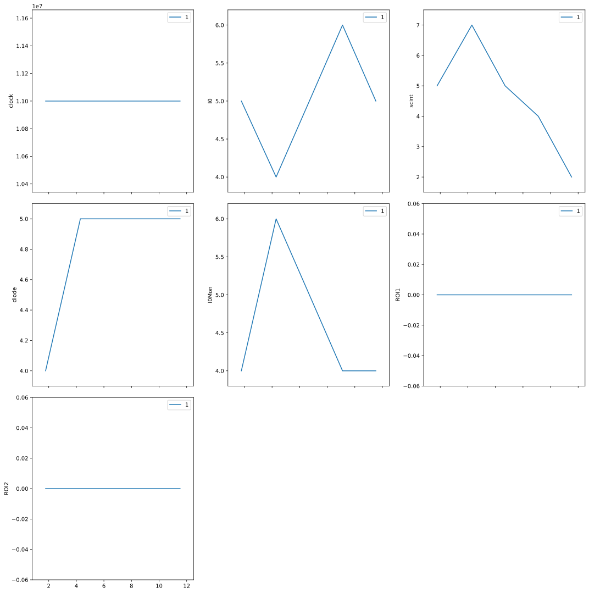
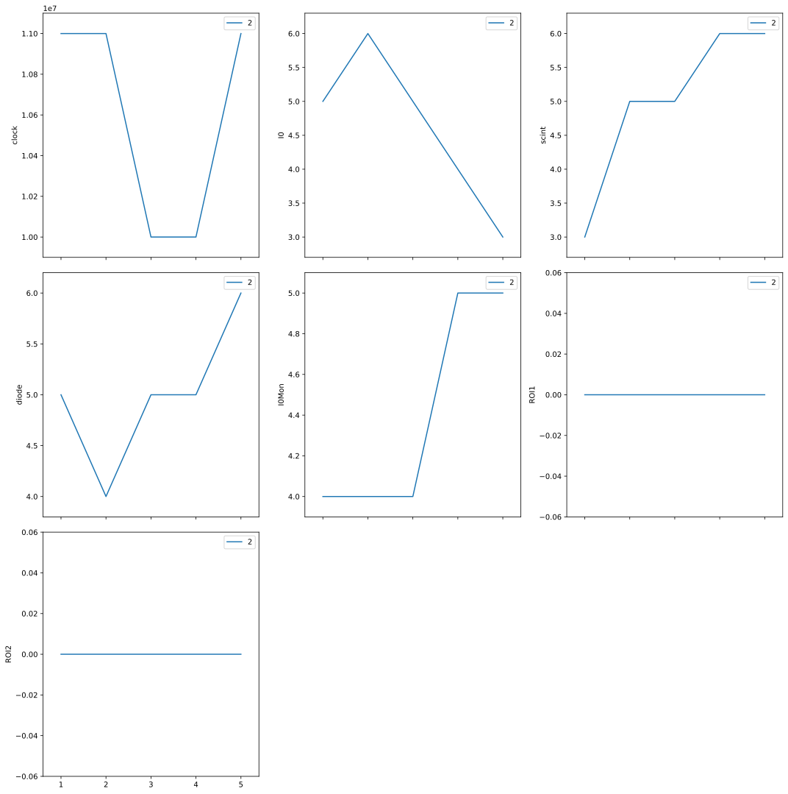

Lesson 3, Part B: Show Data - Concise Summary#
Lesson 3 demonstrated how bluesky can show data as it is acquired. This notebook provides a concise summary, which should be a good general starting point for users.
note: This tutorial expects to find an EPICS IOC on the local network configured as a synApps `xxx <epics-modules/xxx>`__ IOC with prefix sky:. A docker container is available to provide this IOC. See this URL for instructions: prjemian/epics-docker
[1]:
%matplotlib inline
from bluesky.utils import install_nb_kicker
install_nb_kicker()
from ophyd import EpicsMotor
from ophyd.scaler import ScalerCH
from bluesky import RunEngine
import bluesky.plans as bp
from bluesky.callbacks.best_effort import BestEffortCallback
from apstools.devices import use_EPICS_scaler_channels
[2]:
# for jupyterlab ...
# https://stackoverflow.com/a/51932652
# %matplotlib inline
[3]:
RE = RunEngine({})
RE.subscribe(BestEffortCallback())
P = "sky:" # use your IOC's PV prefix here
m1 = EpicsMotor(f"{P}m1", name="m1")
scaler = ScalerCH(f"{P}scaler1", name="scaler")
m1.wait_for_connection()
scaler.wait_for_connection()
scaler.select_channels(None)
Count the detector (5 times)
[4]:
RE(bp.count([scaler], num=5))
Transient Scan ID: 1 Time: 2020-12-04 14:13:00
Persistent Unique Scan ID: 'df825efe-b7b2-4bdd-a495-1a14dd0516c1'
New stream: 'primary'
+-----------+------------+------------+------------+------------+------------+------------+------------+------------+
| seq_num | time | clock | I0 | scint | diode | I0Mon | ROI1 | ROI2 |
+-----------+------------+------------+------------+------------+------------+------------+------------+------------+
| 1 | 14:13:01.7 | 11000000 | 5 | 5 | 4 | 4 | 0 | 0 |
| 2 | 14:13:04.3 | 11000000 | 4 | 7 | 5 | 6 | 0 | 0 |
| 3 | 14:13:06.7 | 11000000 | 5 | 5 | 5 | 5 | 0 | 0 |
| 4 | 14:13:09.1 | 11000000 | 6 | 4 | 5 | 4 | 0 | 0 |
| 5 | 14:13:11.5 | 11000000 | 5 | 2 | 5 | 4 | 0 | 0 |
+-----------+------------+------------+------------+------------+------------+------------+------------+------------+
generator count ['df825efe'] (scan num: 1)
[4]:
('df825efe-b7b2-4bdd-a495-1a14dd0516c1',)

Scan the scaler vs. the motor with 5 data points.
[5]:
RE(bp.scan([scaler], m1, 1, 5, 5))
Transient Scan ID: 2 Time: 2020-12-04 14:13:29
Persistent Unique Scan ID: 'b8c781bd-fa78-4b7f-8ec3-54a4c74b8cd3'
New stream: 'primary'
+-----------+------------+------------+------------+------------+------------+------------+------------+------------+------------+
| seq_num | time | m1 | clock | I0 | scint | diode | I0Mon | ROI1 | ROI2 |
+-----------+------------+------------+------------+------------+------------+------------+------------+------------+------------+
| 1 | 14:13:32.3 | 1.00000 | 11000000 | 5 | 3 | 5 | 4 | 0 | 0 |
| 2 | 14:13:36.0 | 2.00000 | 11000000 | 6 | 5 | 4 | 4 | 0 | 0 |
| 3 | 14:13:39.7 | 3.00000 | 10000000 | 5 | 5 | 5 | 4 | 0 | 0 |
| 4 | 14:13:43.3 | 4.00000 | 10000000 | 4 | 6 | 5 | 5 | 0 | 0 |
| 5 | 14:13:46.9 | 5.00000 | 11000000 | 3 | 6 | 6 | 5 | 0 | 0 |
+-----------+------------+------------+------------+------------+------------+------------+------------+------------+------------+
generator scan ['b8c781bd'] (scan num: 2)
[5]:
('b8c781bd-fa78-4b7f-8ec3-54a4c74b8cd3',)
